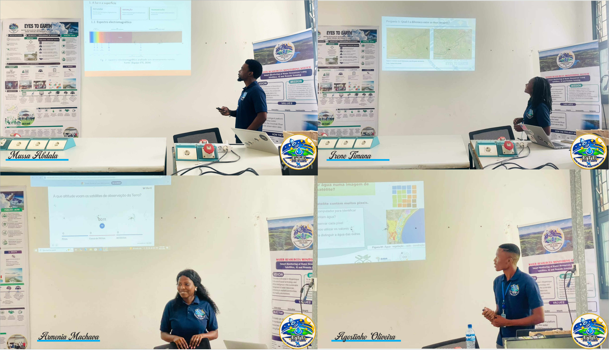
ETE
Ver o Incomáti do espaço
EYES TO EARTH realizou o seu primeiro Workshop de Estudantes e levou os participantes a explorar o Incomáti a partir do espaço.
31 DE OUTUBRO
SOBRE O WORKSHOP
Uma nova perspectiva sobre a Terra
Como podemos observar um rio a partir do espaço? Foi a partir desta pergunta que os participantes do primeiro Workshop de Estudantes da EYES TO EARTH exploraram a ciência, a tecnologia e as aplicações da Observação da Terra.
Sob o tema “Ver o Incomáti do espaço”, o encontro combinou aprendizagem teórica e actividades práticas, aproximando os estudantes das ferramentas utilizadas para compreender e monitorizar o nosso planeta.
01 · EXPLORAR
Compreender a observação da Terra
Os participantes conheceram as missões de satélite Landsat e Sentinel e exploraram diferentes características dos dados de Observação da Terra, incluindo sensores ópticos e radar, resolução espacial, frequência de revisita e bandas espectrais.
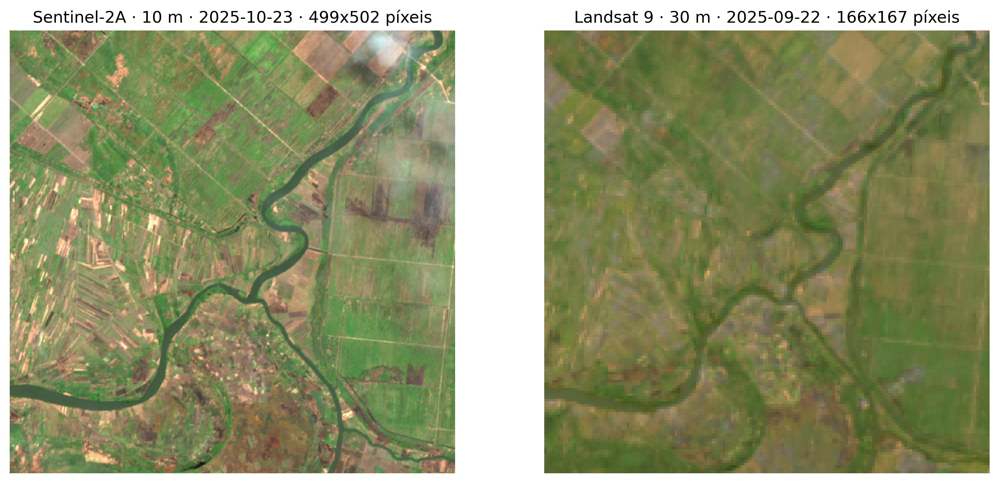
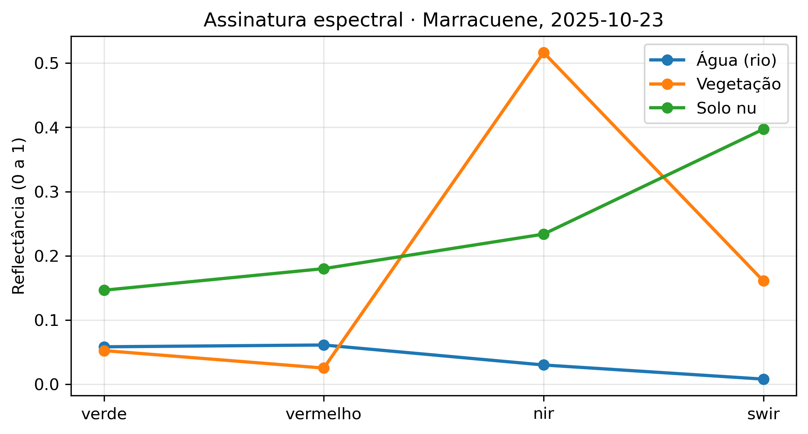
02 · EXPERIMENTAR
Da teoria à prática
A componente prática levou os estudantes a trabalhar com imagens reais de satélite da região do Incomáti, em Marracuene. Com recurso ao Google Colab, Jupyter Notebook e Python, os participantes experimentaram diferentes métodos de análise de imagens.
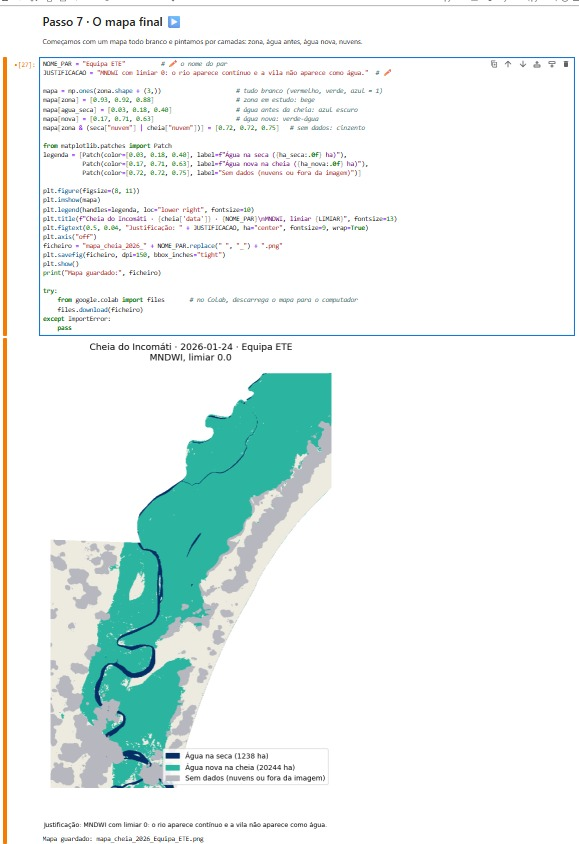
Entre as actividades realizadas estiveram o cálculo dos índices NDWI e MNDWI, a experimentação de limiares para a identificação de água e a produção de mapas.
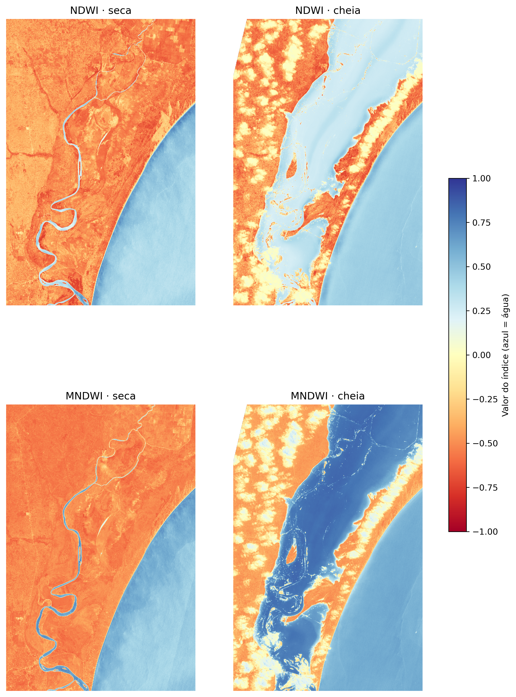
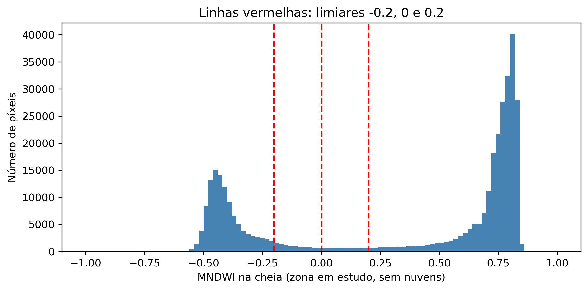
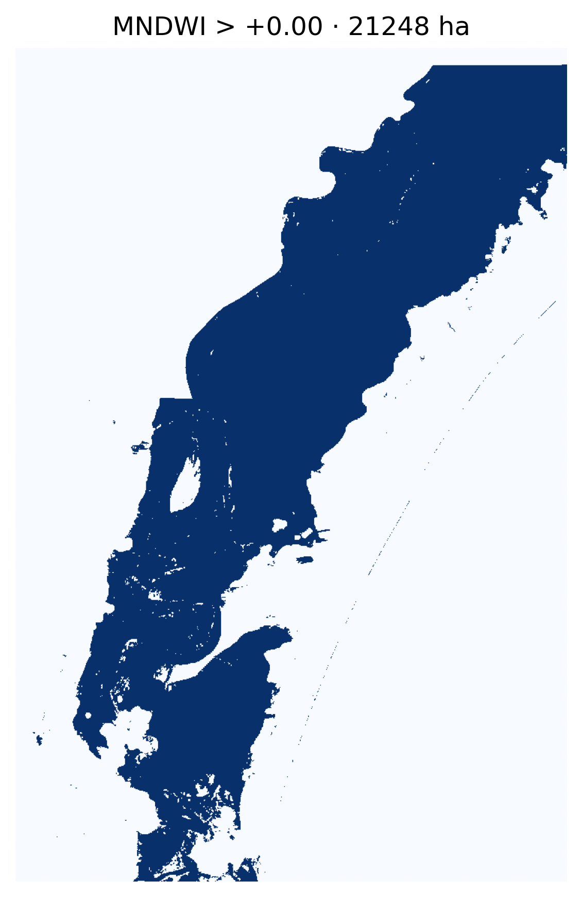
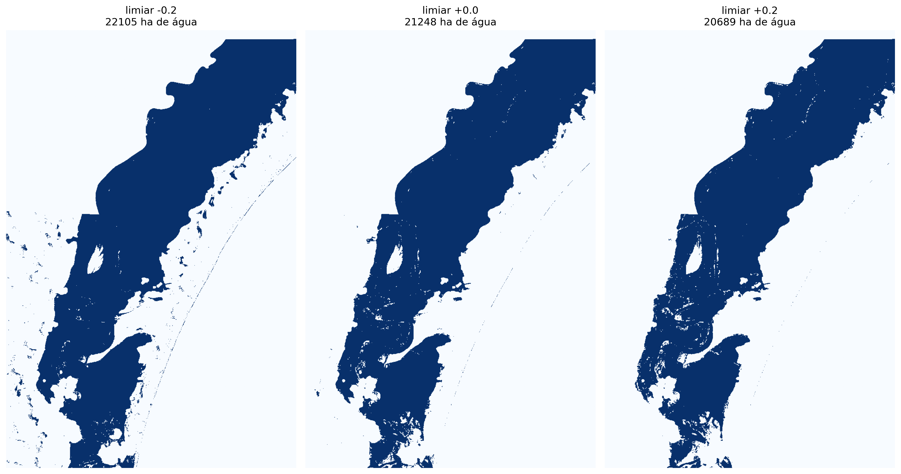
03 · COMPARAR
O Incomáti em diferentes períodos
A análise de imagens de diferentes períodos permitiu comparar as condições da região durante as épocas seca e húmida, observando as mudanças na presença e distribuição da água.
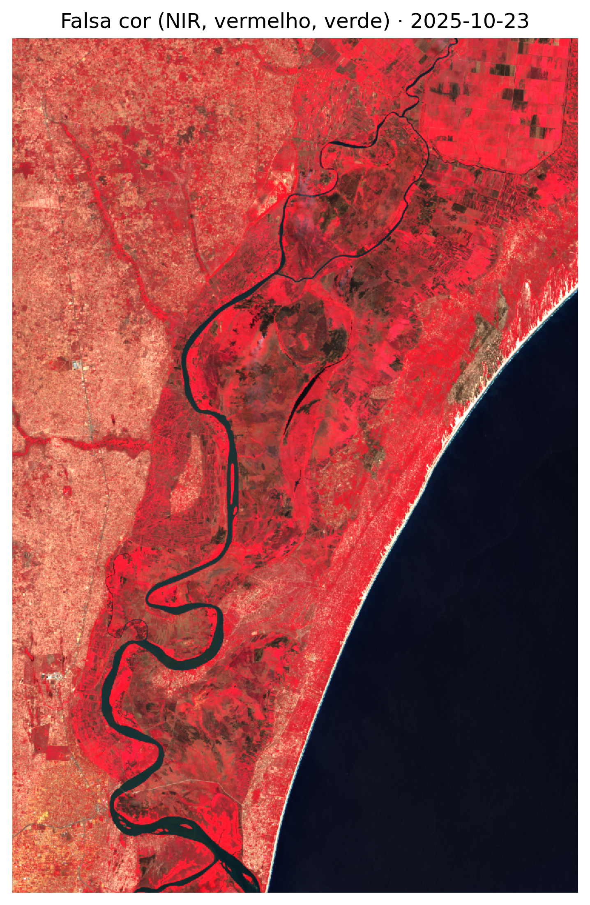
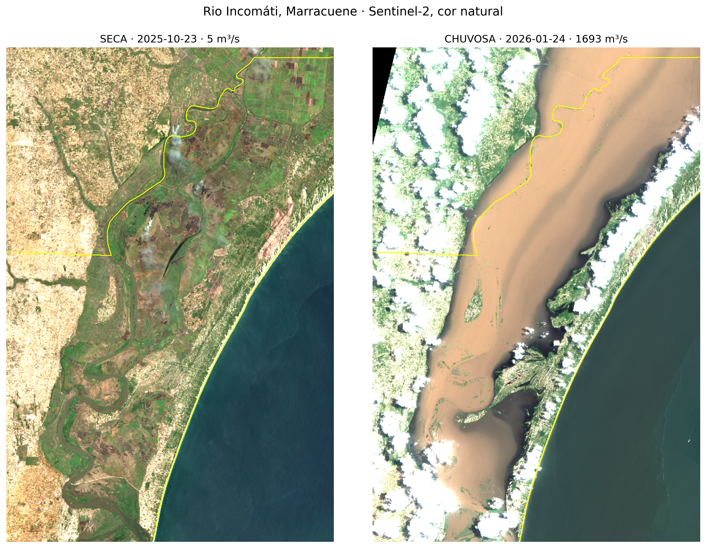
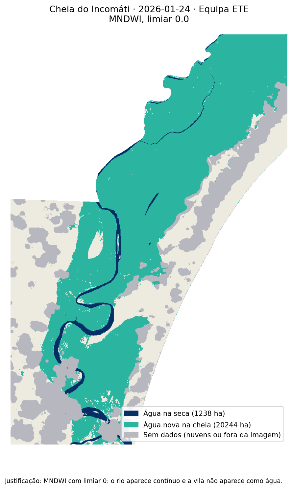
04 · PARTICIPAR
Aprender, colaborar e partilhar
O workshop foi também um espaço de colaboração, experimentação e partilha de conhecimentos. Os estudantes trabalharam em conjunto e apresentaram os resultados das suas actividades.
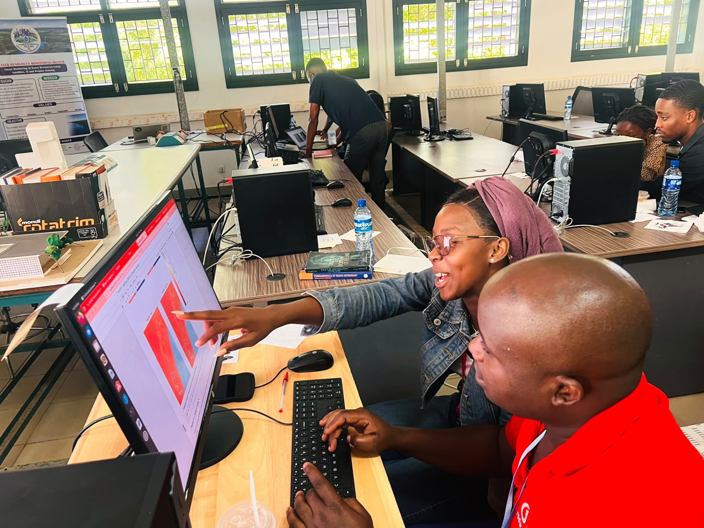
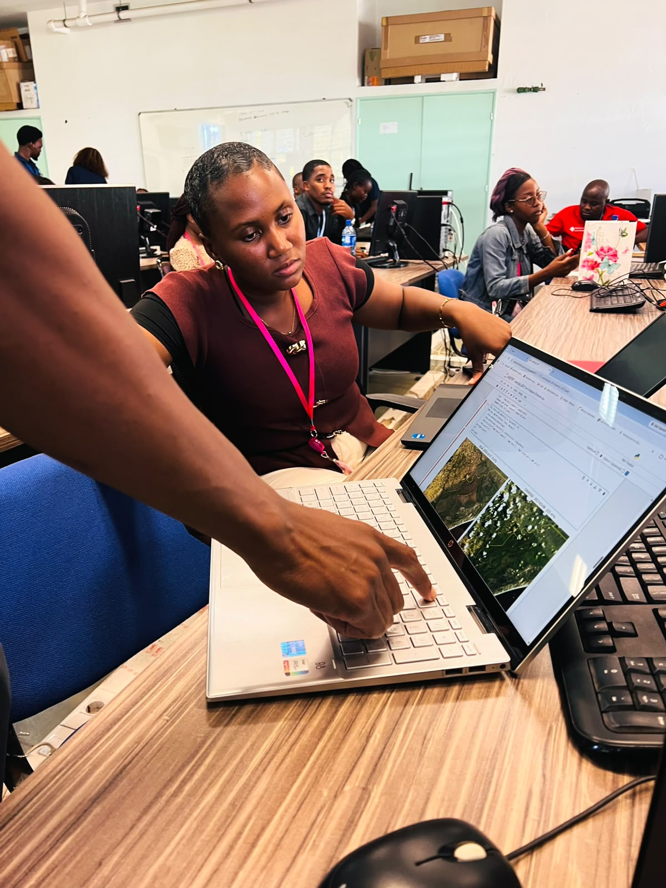
UM MARCO PARA A EYES TO EARTH
O conhecimento também se constrói em conjunto.
A actividade terminou com a entrega de certificados aos participantes, assinalando a conclusão desta primeira experiência de aprendizagem e exploração da Observação da Terra.


Acompanhe-nos e saiba mais
Quer saber mais sobre as nossas actividades, projectos e iniciativas? Acompanhe a SADI Mozambique nas nossas plataformas digitais:
- Facebook: Sadi Mozambique
- LinkedIn: SADI MOZAMBIQUE
Para mais informações, esclarecimentos ou oportunidades de colaboração, entre em contacto connosco através do e-mail: